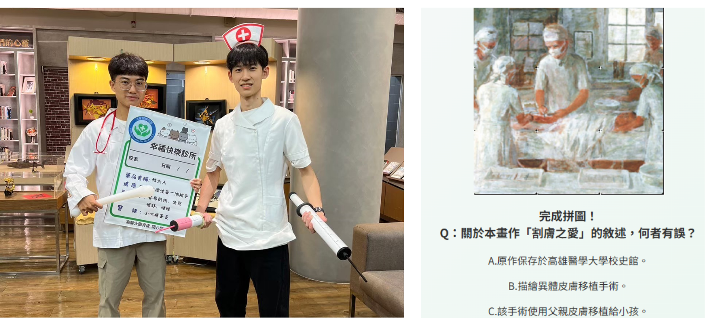
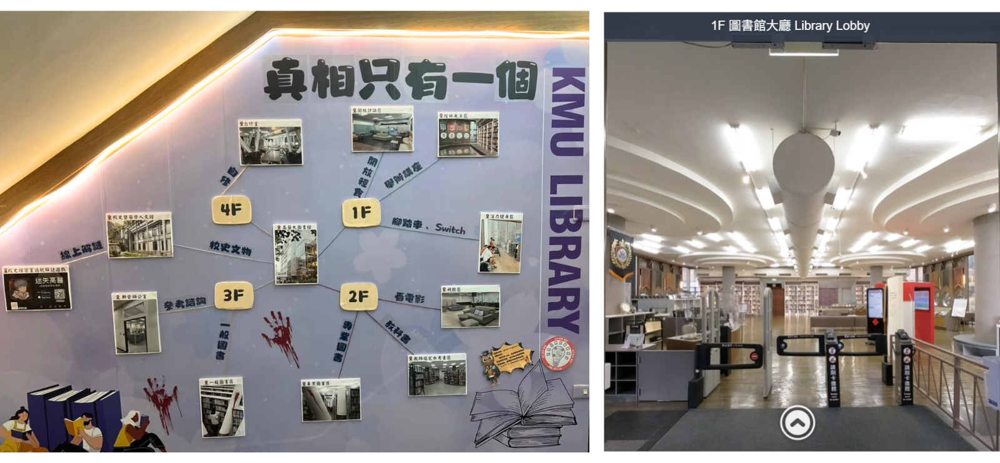
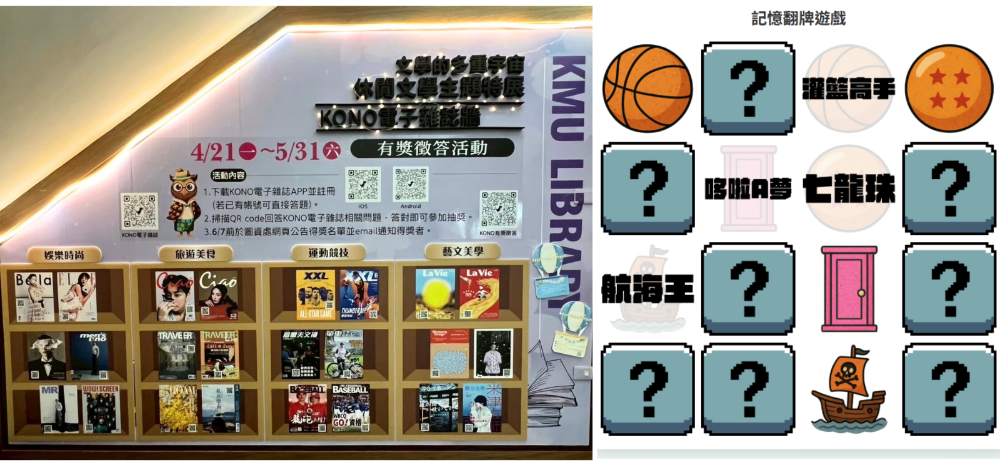

四期展覽介紹
第一期：醫學人文
展區佈置醫師袍、手術服、手舉牌，提供讀者進行角色扮演。
另建立醫學人文藝術闖關，將醫學畫作結合拼圖遊戲，使讀者認識畫作中的醫學知識。

第二期：飲食文學
以「解憂食堂」為主題，將料理、食材融入場景設計。
並從飲食文學中擷取篇幅作為互動遊戲題目，讓讀者透過閱讀認識飲食意義。
第三期：推理文學
展區佈置偵探辦案牆，以紅線連結館內空間圖，營造推理氛圍。
另結合線上導覽製作問答遊戲，帶領讀者探索館內未曾留意的角落。
第四期：休閒文學
展區佈置休閒雜誌牆，展示四大主題雜誌封面，並推廣線上閱讀。
另以「漫畫」為題設計對對碰遊戲，使讀者在遊戲中認識館藏並借閱。
